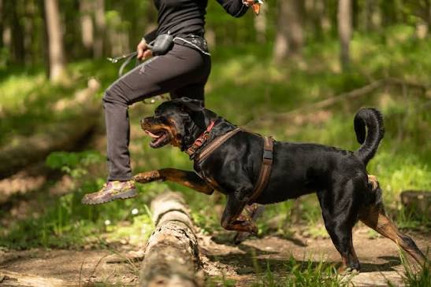
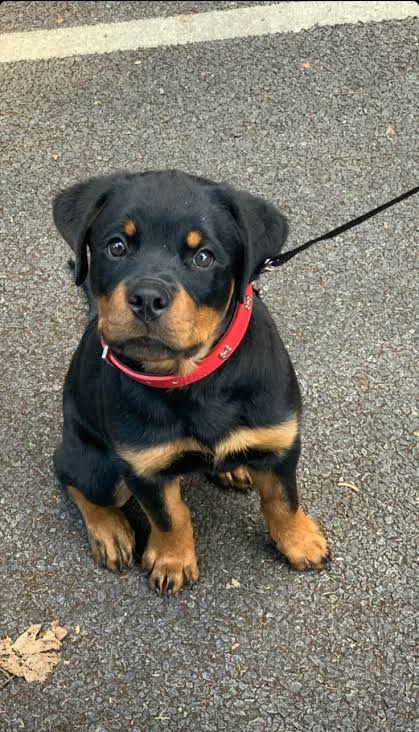
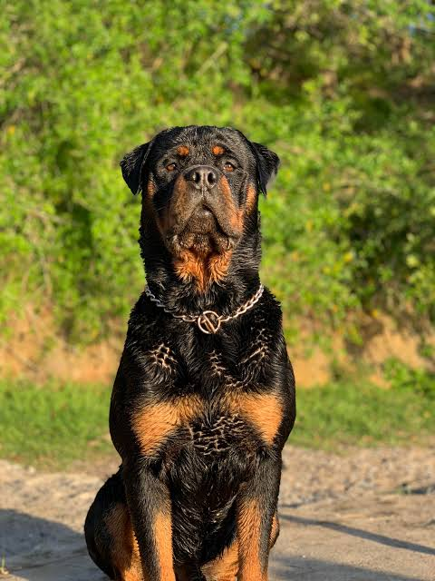

Welcome to Rottweiler World, a website dedicated to one of the world's most powerful, intelligent and loyal dog breeds.
Rottweilers are known for their strength, confidence and protective nature. With proper training and care, they can become wonderful family companions.
The Rottweiler is a large domestic dog breed known for its muscular body, black coat and distinctive tan markings. These dogs are intelligent, confident and naturally protective.
Although they can look intimidating, well-socialised Rottweilers can be affectionate and gentle with their families. Responsible ownership and training are essential.
Rottweilers are often used as working dogs, guard dogs, service dogs and loyal companions.
Rottweilers originated in Germany. Their ancestors were used to drive cattle and pull carts for farmers and butchers.
The breed takes its name from the German town of Rottweil. Over time, Rottweilers became useful working dogs and were later used in police work, protection and other demanding tasks.

| Feature | Information |
|---|---|
| Origin | Germany |
| Breed type | Working dog |
| Coat | Short, black and tan |
| Temperament | Confident, loyal and intelligent |
| Life expectancy | Approximately 8–10 years |
Rottweilers need daily exercise, consistent training, socialisation, nutritious food and regular veterinary check-ups.
Every dog needs proper care, attention and responsible handling.
|
 Rottweiler Puppy |
 Adult Rottweiler |
| Strong dogs. Loyal companions. | |
A Rottweiler is more than just a powerful dog. With responsible ownership, it can be a devoted and loving companion.
Explore these websites for more information:
Celebrating a loyal and remarkable breed.
Created for an HTML website project.
© 2026 Rottweiler World